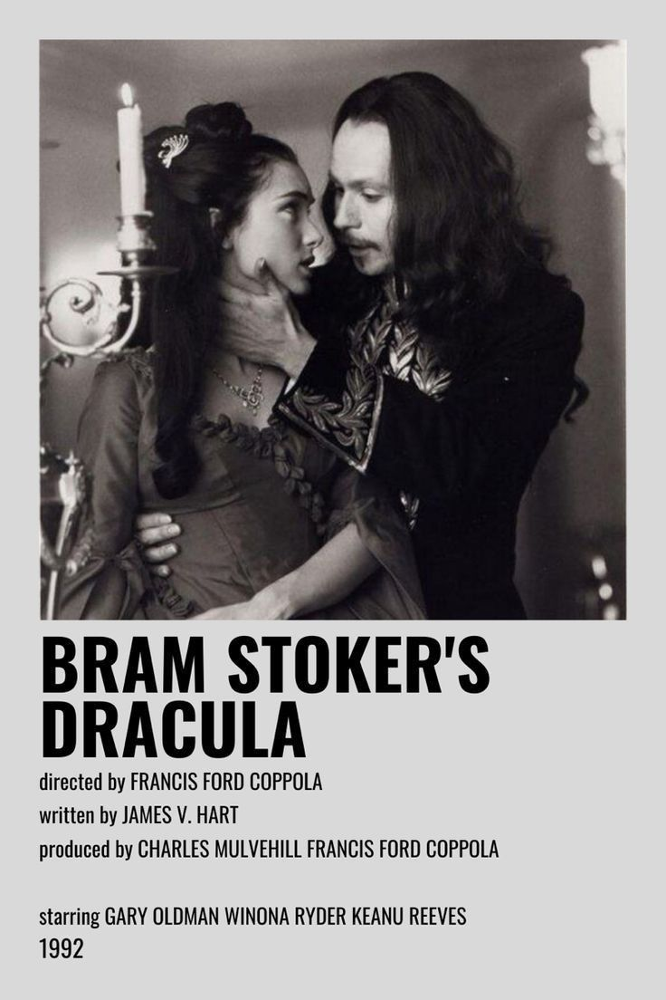
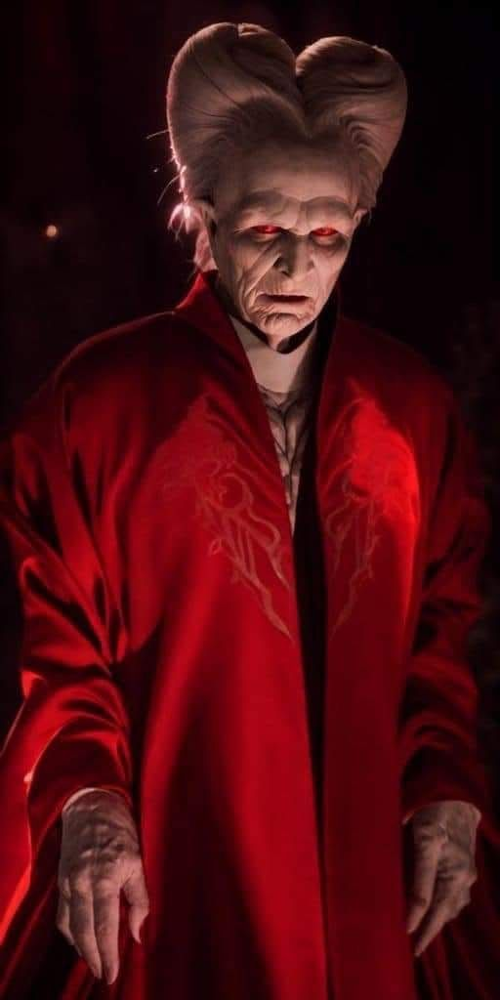
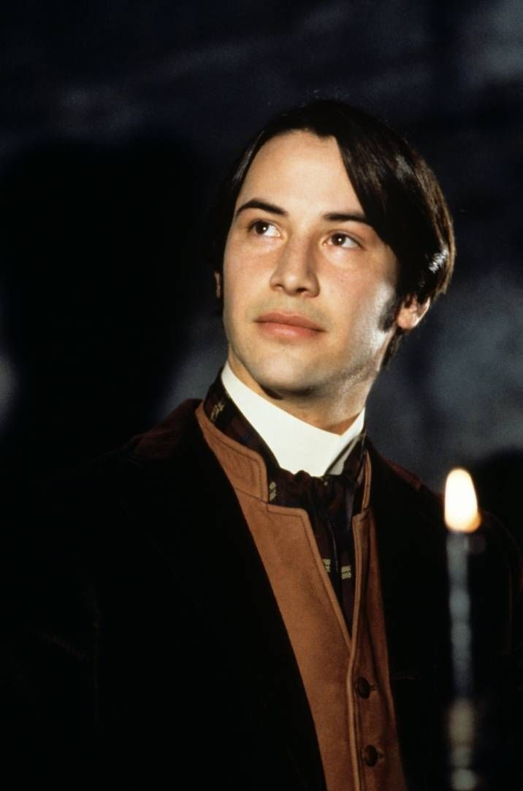
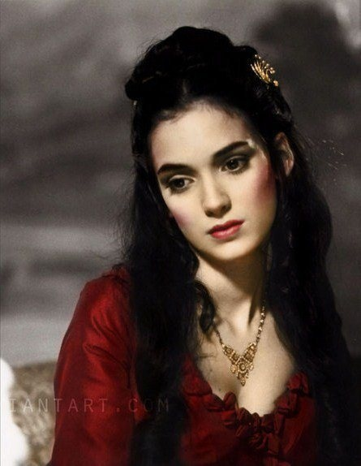
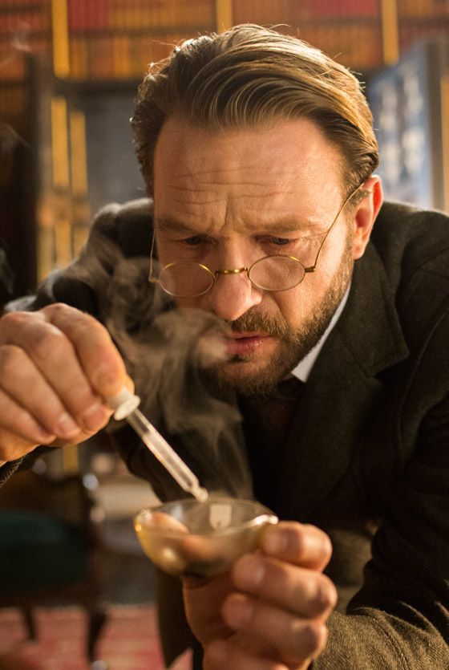

Drácula de Bram Stoker (1992) é um filme de terror gótico dirigido por Francis Ford Coppola e escrito por James V. Hart. Estrelado por Gary Oldman, Winona Ryder, Anthony Hopkins e Keanu Reeves, a trama acompanha o Conde Drácula ao viajar para a Inglaterra do século XIX após se apaixonar por Mina Murray, noiva de seu advogado, enquanto o especialista Abraham Van Helsing é convocado para combatê-lo.
Após perder sua esposa Elisabeta, que se suicidou devido a um falso boato de sua morte na guerra em 1462, o príncipe Vlad Drácula tem a alma dela condenada pela igreja. Enlouquecido de dor, ele renuncia a Deus, profana a capela e bebe sangue sagrado, tornando-se um vampiro imortal. Séculos depois, em 1897, o advogado Jonathan Harker viaja ao castelo do Conde na Transilvânia para fechar um negócio imobiliário em Londres. Ao ver a foto da noiva de Jonathan, Mina Murray, Drácula reconhece nela a reencarnação de Elisabeta; ele deixa Jonathan preso com suas noivas e navega para a Inglaterra.
Em Londres, Drácula rejuvenesce, seduz Mina e transforma a amiga dela, Lucy, em vampira, que acaba destruída por um grupo de caçadores liderado pelo especialista Dr. Van Helsing. Após Jonathan escapar e se casar com Mina, Drácula decide infectá-la com seu sangue para transformá-la, mas a jovem recupera as memórias de sua vida passada e corresponde ao seu amor. Perseguido por Van Helsing e pelos amigos de Mina, que destroem seus esconderijos, o Conde foge de volta para a Transilvânia.
Na batalha final diante de seu castelo, os caçadores ferem mortalmente o vampiro. Mina o leva para a mesma capela onde ele renunciou à fé séculos antes e, em um ato final de amor e misericórdia a pedido do próprio Drácula, ela o golpeia no coração e o decapita. O ato encerra a maldição sobre Mina e permite que as almas de Vlad e Elisabeta finalmente encontrem a paz e ascendam juntas aos céus.

Conde Drácula: Um antigo nobre da Transilvânia (dos Cárpatos) que é, na verdade, um vampiro centenário com poderes de telepatia, metamorfose (morcegos, lobos, névoa) e controle do tempo, mas preso a fraquezas como a aversão ao sol e símbolos sagrados.

Jonathan Harker: Jovem advogado inglês que viaja até o Castelo de Drácula na Transilvânia para fechar uma transação imobiliária e acaba prisioneiro do Conde.

Mina Murray (Mina Harker): Noiva (e depois esposa) de Jonathan. Inteligente, corajosa e engenhosa, ela ajuda a rastrear e derrotar Drácula, embora chegue a ser atacada e quase transformada pelo vampiro

Professor Abraham Van Helsing: Cientista holandês, médico e especialista em conhecimentos ocultos e vampirismo, que lidera inteiramente a caçada ao Conde Drácula.